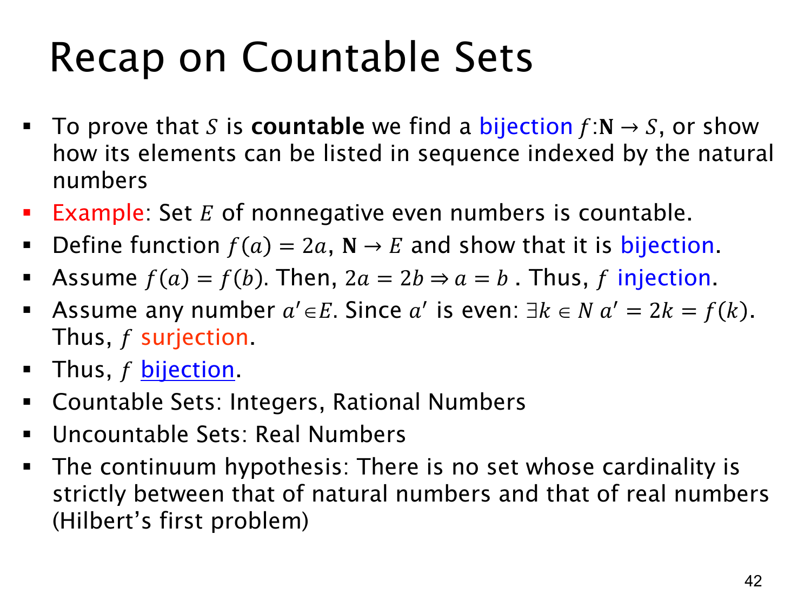

L1.4 · 第 42 页讲解原文
查看这一页课件

可数集合回顾与连续统假设
本页重申：要证明无限集合 S 可数，可以构造从 N 到 S 的双射，也就是把 S 的元素排成自然数编号、不遗漏也不重复的序列。例子取非负偶数集 E={0,2,4,…}，定义
f:N→E,f(a)=2a.
单射性：若 f(a)=f(b)，即 2a=2b，两边除以非零的 2，得 a=b。满射性：任取 a′∈E，按非负偶数的定义存在 k∈N 使 a′=2k=f(k)。所以 f 是双射，∣E∣=∣N∣=ℵ0。
课件还回顾：整数集 Z 和有理数集 Q 可数；实数集 R 不可数。整数可用 0,1,−1,2,−2,… 排列；有理数可先按正整数分子、分母的对角线列举，再处理负数和零。实数在 (0,1) 内已不可数，因此更大的 R 也不可能是可数的。
最后提到连续统假设（continuum hypothesis）：是否不存在基数严格介于 ∣N∣ 与 ∣R∣ 之间的集合？“自然数比实数少”已由对角线法证明，但这没有自动回答是否存在中间大小。课件把连续统假设列为希尔伯特第一问题。作为进一步背景，在通常的 ZFC 集合论公理下，这个假设是独立的：若 ZFC 一致，单靠这些公理既不能证明它，也不能证明其否定。这与“命题已经被证明为真或假”不同。相关原始论文见 Gödel 的相容性结果 与 Cohen 的独立性结果；本页课程目标主要是识别该假设所比较的两个基数。